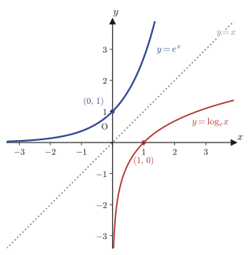
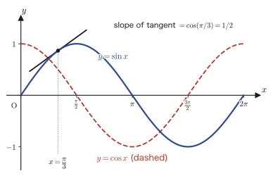
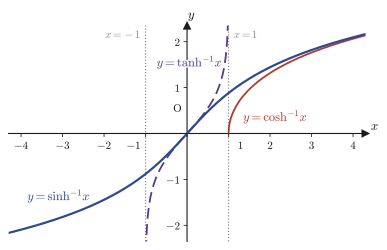
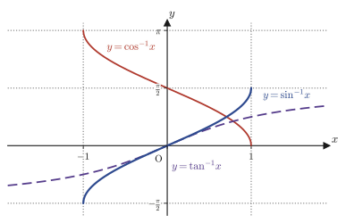

Chapter 3Derivatives of Elementary Functions
In Chapter 1 we learned the definition of the derivative at a point, $\displaystyle f'(x)=\lim_{h\to0}\frac{f(x+h)-f(x)}{h}$, and in Chapter 2 the mean value theorem and the hyperbolic functions. So far, however, the functions whose derivatives we have actually “computed all the way from this definition” can be counted on the fingers of one hand—$x^n$ and a few others. The exponential function $e^x$, the logarithmic function $\log_e x$, the trigonometric function $\sin x$, the hyperbolic function $\sinh x$, …: many of you were probably taught the derivatives of these in high school as formulas handed down without proof. This chapter has just one purpose: to prove all of those formulas for ourselves, going back to the definition of the derivative at a point.
The proofs follow almost the same pattern. We substitute the function into the defining formula $\lim_{h\to0}\{f(x+h)-f(x)\}/h$, tidy up the expression using the addition formulas and the laws of exponents, and finally reduce it to a “fundamental limit” (such as $\lim_{h\to0}\frac{\sin h}{h}=1$ or $\lim_{h\to0}\frac{e^h-1}{h}=1$)—nearly everything is a repetition of this single pattern. Please follow the first few cases ($e^x$ and $\sin x$) through to the end, working them out by hand. By the time you reach the second half (the hyperbolic functions and the inverse trigonometric functions), you will notice, “Ah, this pattern again,” and should find the reading, if anything, easier. Along the way we also pick up a powerful technique, “logarithmic differentiation” (the trick of taking the logarithm of both sides before differentiating), for handling functions of the form $y=a^x$ or $y=x^\alpha$. This also sets the stage for Chapter 4, where we deal with functions such as $x^x$.
- Differentiation formulas for exponential functions: $\dfrac{d}{dx}e^x=e^x$, $\dfrac{d}{dx}a^x=a^x\ln a$ ($a\gt0$), and the basic procedure of logarithmic differentiation (“take the logarithm of both sides, then differentiate”)
- Differentiation formulas for products and quotients: $(fg)'=f'g+fg'$, $(f/g)'=(f'g-fg')/g^2$, and the “add and subtract” proof technique used for each
- Differentiation formulas for logarithmic functions: $\dfrac{d}{dx}\log_e x=\dfrac1x$, $\dfrac{d}{dx}\log_a x=\dfrac{1}{x\ln a}$, $\dfrac{d}{dx}\log_e f(x)=\dfrac{f'(x)}{f(x)}$, and the general power function $\dfrac{d}{dx}x^\alpha=\alpha x^{\alpha-1}$ ($\alpha$ is an arbitrary real number)
- Differentiation formulas for trigonometric functions: $\dfrac{d}{dx}\sin x=\cos x$, $\dfrac{d}{dx}\cos x=-\sin x$, $\dfrac{d}{dx}\tan x=\dfrac{1}{\cos^2x}$
- Differentiation formulas for hyperbolic functions and their inverses: $\sinh,\cosh,\tanh$ and their inverse functions $\sinh^{-1},\cosh^{-1},\tanh^{-1}$ (six formulas in all)
- Differentiation formulas for inverse trigonometric functions: the definitions of $\sin^{-1}x,\cos^{-1}x,\tan^{-1}x$ (how the principal value is chosen) and their derivatives
- The idea of differentiating an inverse function, $\dfrac{dy}{dx}=1\big/\dfrac{dx}{dy}$ (used repeatedly for the inverses of the hyperbolic and trigonometric functions)
Source notes: Yasuhide Mochizuki, Mathematics Notes: Calculus, pp. 23–29.
3.1 Basic Differentiation Formulas for Exponential Functions
First, let us find the derivative of the exponential function $e^x$ by substituting directly into the defining formula for the derivative. Here $e$ is Napier's constant (also called Euler's number; $e=2.71828\ldots$), the constant that was defined in Chapter 1 as $\displaystyle e=\lim_{n\to\infty}\left(1+\frac1n\right)^n=\lim_{t\to0}(1+t)^{\frac1t}$.
Math Note: The fundamental limit used repeatedly in this chapter $\displaystyle\lim_{h\to0}\frac{e^h-1}{h}=1$
When we compute the defining formula for the derivative of $e^x$, the limit $\displaystyle\lim_{h\to0}\frac{e^h-1}{h}$ eventually appears. That this value is $1$ has already been proved in Chapter 1 (there, taking the logarithm of both sides of the definition $\displaystyle e=\lim_{t\to0}(1+t)^{\frac1t}$ of Napier's constant and substituting $x=e^u-1$ led to $\displaystyle\lim_{x\to0}\frac{e^x-1}{x}=1$ (Chapter 1, Section 1.5)). To be safe, let us confirm the same conclusion with a slightly different substitution. Let $u=e^h-1$ (that is, $h=\log_e(1+u)$). Then $u\to0$ as $h\to0$, and
$$ \frac{e^h-1}{h}=\frac{u}{\log_e(1+u)}=\frac{1}{\dfrac{1}{u}\log_e(1+u)}=\frac{1}{\log_e(1+u)^{\frac1u}} $$(the last equality uses the property of logarithms $k\log_e X=\log_e X^k$ with $k=1/u$). Since $(1+u)^{\frac1u}\to e$ as $u\to0$, the denominator approaches $\log_e e=1$. Therefore
$$ \lim_{h\to0}\frac{e^h-1}{h}=\frac{1}{\log_e e}=\frac11=1 $$which agrees with the result of Chapter 1. From here on we use this fact, under the name “fundamental limit,” without further comment.
Formula 3.1: $\dfrac{d}{dx}e^x=e^x$
The exponential function $e^x$ has the property that its form does not change when it is differentiated (it is its own derivative).
\begin{equation} \frac{d}{dx}e^x=e^x\label{eq:3-exp-e} \end{equation}Proof of Formula 3.1
We compute the derivative of $f(x)=e^x$ from the definition.
$$ f'(x)=\lim_{h\to0}\frac{f(x+h)-f(x)}{h}=\lim_{h\to0}\frac{e^{x+h}-e^x}{h} $$Using the law of exponents $e^{x+h}=e^x\cdot e^h$ to factor out $e^x$, we get
$$ =\lim_{h\to0}\frac{e^x(e^h-1)}{h}=e^x\cdot\lim_{h\to0}\frac{e^h-1}{h} $$(since $e^x$ does not contain $h$, it can be taken outside the limit). Using the fundamental limit from the Math Note above, we get
$$ f'(x)=e^x\cdot1=e^x $$as the result.
∎
Alternative solution: Taking logarithms and differentiating (the first step of logarithmic differentiation)
Taking the natural logarithm of both sides of $y=e^x$ ($\log_e$ is the logarithm with base $e$; below it is also written $\ln$), we get
$$ \log_e y=\log_e e^x=x $$(we used the property of logarithms $\log_e e^x=x$). We differentiate both sides of this equation with respect to $x$. The right-hand side is $\dfrac{d}{dx}x=1$ ($\cdots①$). For the left-hand side, noting that $y$ is a function of $x$, we use the chain rule (differentiation of composite functions), which is covered in high school mathematics. Since $\log_e y$ is the composition of “the function $\log_e(\cdot)$ of $y$” with “the function $y$ of $x$,”
$$ \frac{d}{dx}\log_e y=\frac{d}{dy}\log_e y\cdot\frac{dy}{dx}=\frac1y\cdot\frac{dy}{dx}\quad\cdots② $$($\dfrac{d}{dy}\log_e y=\dfrac1y$ is exactly Formula 3.5, which is proved afresh in Section 3.3 of this chapter, but here we anticipate the result learned in high school and use it). Since ① and ② both give the value of the same left-hand side $\dfrac{d}{dx}\log_e y$, ① $=$ ② gives
$$ \frac1y\cdot\frac{dy}{dx}=1 $$Multiplying both sides by $y$ gives $\dfrac{dy}{dx}=y$. Substituting $y=e^x$ gives
$$ \frac{dy}{dx}=e^x $$and we obtain the same result.
Math Note: General procedure for logarithmic differentiation
The method we have just used, “take the logarithm of both sides and then differentiate,” is called logarithmic differentiation. When a function of the form $y=($expression$)$ is hard to differentiate directly—because the variable sits in the exponent (such as $a^x$), because the variable is in the base and also in the exponent (such as $x^x$), or because products and quotients are tangled together in a complicated way—it can be differentiated in the following three steps.
- Take the natural logarithm of both sides: $\log_e y=\log_e(\text{expression})$. Simplify the right-hand side as much as possible using properties of logarithms (such as $\log(AB)=\log A+\log B$ and $\log(A^k)=k\log A$).
- Differentiate both sides with respect to $x$. By the chain rule, the left-hand side becomes $\dfrac{d}{dx}\log_e y=\dfrac1y\cdot\dfrac{dy}{dx}$.
- Rearrange the resulting equation into the form $\dfrac{dy}{dx}=y\times(\cdots)$, and finally replace $y$ by the original expression.
We use this procedure repeatedly in Formula 3.2 ($a^x$) of this section, Formula 3.8 ($x^\alpha$) in Section 3.3, Example 3.5 ($x^x$), and Exercise 3.6 ($x^{\sin x}$). Some of you may have briefly encountered the computation “take logarithms and differentiate” in high school as well, but here we organize it as an independent, general technique.
Formula 3.2: $\dfrac{d}{dx}a^x=a^x\log_e a\quad(a\gt0)$
The derivative of the general exponential function $a^x$ ($a\gt0$), whose base is not necessarily $e$, is $a^x\log_e a$.
\begin{equation} \frac{d}{dx}a^x=a^x\log_e a\qquad(a\gt0)\label{eq:3-exp-a} \end{equation}Proof of Formula 3.2 (logarithmic differentiation)
Let $y=a^x$. Taking the natural logarithm of both sides gives
$$ \log_e y=\log_e a^x=x\log_e a $$(We used the property of logarithms $\log_e a^x=x\log_e a$. Since $a$ is a constant, $\log_e a$ is also just a constant.) We differentiate both sides with respect to $x$. The right-hand side is the derivative of “the constant $\log_e a$ times $x$,” so we have
$$ \frac{d}{dx}\log_e y=\log_e a\quad\cdots① $$On the other hand, by the same chain rule as before, the left-hand side is
$$ \frac{d}{dx}\log_e y=\frac{d}{dy}\log_e y\cdot\frac{dy}{dx}=\frac1y\cdot\frac{dy}{dx}\quad\cdots② $$From ① $=$ ②, $\dfrac1y\cdot\dfrac{dy}{dx}=\log_e a$. Multiplying both sides by $y$ gives
$$ \frac{dy}{dx}=y\cdot\log_e a $$Substituting $y=a^x$, we obtain
$$ \frac{d}{dx}a^x=a^x\log_e a $$as the result.
∎
Caution: Check by returning to $a=e$
Setting $a=e$ in Formula 3.2, we have $\log_e e=1$, so $\dfrac{d}{dx}e^x=e^x\cdot1=e^x$, which agrees with Formula 3.1. Formula 3.2 is a generalization of Formula 3.1 to “an arbitrary base $a$.”
Example 3.1: The derivative of $y=2e^x-3^x$ and the tangent line at $x=0$
(1) Find the derivative $y'$ of $y=2e^x-3^x$. (2) Find the equation of the tangent line at $x=0$.
Solution. (1) We use Formula 3.1 ($\dfrac{d}{dx}e^x=e^x$) and Formula 3.2 ($\dfrac{d}{dx}a^x=a^x\log_e a$ with $a=3$) term by term. Since a constant factor can be pulled out of a derivative (covered in high school mathematics),
$$ y'=2\cdot\frac{d}{dx}e^x-\frac{d}{dx}3^x=2e^x-3^x\log_e3 $$(2) Substituting $x=0$, we get $y(0)=2e^0-3^0=2\cdot1-1=1$ and $y'(0)=2e^0-3^0\log_e3=2-\log_e3$. The tangent line is the line through the point $(0,1)$ with slope $2-\log_e3$, so its equation is
$$ y=1+(2-\log_e3)x $$Since $\log_e3=1.0986\ldots$, the slope is approximately $0.901$ (numerically verified with SymPy: $y'(0)=2-\ln3=0.9013877\ldots$). The fact that the slope of the tangent line is positive corresponds, on the graph, to $y$ increasing just past $x=0$.
3.2 Differentiation Formulas for Products and Quotients
Next we prove the differentiation formulas for the product $f(x)g(x)$ and the quotient $f(x)/g(x)$ of two functions $f(x)$ and $g(x)$. What the two proofs have in common is that the extra terms that appear when we expand “$(f+\Delta f)$ times $(g+\Delta g)$” are dealt with by the trick of adding and immediately subtracting one particular quantity.
Formula 3.3: Product rule $\{f(x)g(x)\}'=f'(x)g(x)+f(x)g'(x)$
\begin{equation} \{f(x)g(x)\}'=f'(x)g(x)+f(x)g'(x)\label{eq:3-product-rule} \end{equation}Proof of Formula 3.3
Returning to the definition,
$$ \{f(x)g(x)\}'=\lim_{h\to0}\frac{f(x+h)g(x+h)-f(x)g(x)}{h} $$The numerator has the form “the product after $f$ and $g$ have both changed at the same time” minus “the product before the change”; as it stands, we cannot separate the change in $f$ from the change in $g$. So we add and subtract $f(x)g(x+h)$ in the numerator (since we add and subtract the same value, the value of the whole expression does not change).
$$ =\lim_{h\to0}\frac{\{f(x+h)g(x+h)-f(x)g(x+h)\}+\{f(x)g(x+h)-f(x)g(x)\}}{h} $$The expression in the first pair of braces has $g(x+h)$ as a common factor, and the one in the second pair has $f(x)$ as a common factor, so we factor each out and split the fraction into two.
$$ =\lim_{h\to0}\left\{\frac{f(x+h)-f(x)}{h}\cdot g(x+h)\right\}+\lim_{h\to0}\left\{\frac{g(x+h)-g(x)}{h}\cdot f(x)\right\} $$In the first limit, $\dfrac{f(x+h)-f(x)}{h}\to f'(x)$ (this is exactly the definition of the derivative at a point), and $g(x+h)\to g(x)$. (This is a manifestation of the fact that “differentiable implies continuous”: since $g(x+h)-g(x)=\dfrac{g(x+h)-g(x)}{h}\times h\to g'(x)\times0=0$, we can conclude that $g(x+h)\to g(x)$.) In the second limit, $\dfrac{g(x+h)-g(x)}{h}\to g'(x)$, and $f(x)$ does not contain $h$ at all, so it is treated as a constant and remains as it is. Therefore,
$$ \{f(x)g(x)\}'=f'(x)\cdot g(x)+g'(x)\cdot f(x)=f'(x)g(x)+f(x)g'(x) $$is obtained.
∎
Formula 3.4: Quotient rule $\left\{\dfrac{f(x)}{g(x)}\right\}'=\dfrac{f'(x)g(x)-f(x)g'(x)}{g(x)^2}\quad(g(x)\neq0)$
\begin{equation} \left\{\frac{f(x)}{g(x)}\right\}'=\frac{f'(x)g(x)-f(x)g'(x)}{g(x)^2}\label{eq:3-quotient-rule} \end{equation}Proof of Formula 3.4 (Part 1: directly from the definition)
From the definition,
$$ \left\{\frac{f(x)}{g(x)}\right\}'=\lim_{h\to0}\frac{\dfrac{f(x+h)}{g(x+h)}-\dfrac{f(x)}{g(x)}}{h} $$We combine the two fractions in the numerator over a common denominator (making the denominator $g(x+h)g(x)$).
$$ =\lim_{h\to0}\frac{f(x+h)g(x)-f(x)g(x+h)}{g(x)g(x+h)\cdot h} $$Here we use the same trick as before: in the numerator, we add $-f(x)g(x)$ once and subtract it once.
$$ =\lim_{h\to0}\frac{1}{g(x+h)g(x)}\cdot\frac{\{f(x+h)g(x)-f(x)g(x)\}-\{f(x)g(x+h)-f(x)g(x)\}}{h} $$(Since $-f(x)g(x)$ and $+f(x)g(x)$ cancel each other, let us check that this agrees with the original numerator.) We factor $g(x)$ out of the first pair of braces and $f(x)$ out of the second.
$$ =\lim_{h\to0}\frac{1}{g(x+h)g(x)}\cdot\left\{\underbrace{\frac{f(x+h)-f(x)}{h}}_{\to\,f'(x)}\cdot g(x)-\underbrace{\frac{g(x+h)-g(x)}{h}}_{\to\,g'(x)}\cdot f(x)\right\} $$As $h\to0$, the two fractions marked with underbraces tend to $f'(x)$ and $g'(x)$, respectively, and the leading factor $\dfrac{1}{g(x+h)g(x)}$ tends to $\dfrac{1}{g(x)^2}$ (because $g(x+h)\to g(x)$ by the continuity of $g$). Hence,
$$ =\frac{1}{g(x)^2}\{f'(x)g(x)-f(x)g'(x)\}=\frac{f'(x)g(x)-f(x)g'(x)}{g(x)^2} $$is obtained.
∎
Proof of Formula 3.4 (Part 2: reducing to the product rule)
Another approach is to write $\dfrac{f(x)}{g(x)}=f(x)\cdot\dfrac{1}{g(x)}$ and use Formula 3.3 (the product rule).
$$ \left\{\frac{f(x)}{g(x)}\right\}'=f'(x)\cdot\frac{1}{g(x)}+f(x)\cdot\left\{\frac{1}{g(x)}\right\}' $$For this we need $\left\{\dfrac{1}{g(x)}\right\}'$. Let us find it with the chain rule. Let $u=g(x)$ and consider $y=\dfrac1u$.
$$ \frac{dy}{dx}=\frac{dy}{du}\cdot\frac{du}{dx} $$From $y=u^{-1}$ we get $\dfrac{dy}{du}=-u^{-2}=-\dfrac{1}{u^2}$ (the differentiation of power functions, already learned in high school), and $\dfrac{du}{dx}=g'(x)$, so
$$ \frac{dy}{dx}=-\frac{1}{u^2}\cdot g'(x)=-\frac{g'(x)}{g(x)^2} $$that is, $\left\{\dfrac1{g(x)}\right\}'=-\dfrac{g'(x)}{g(x)^2}$. Substituting this, we obtain
$$ \left\{\frac{f(x)}{g(x)}\right\}'=\frac{f'(x)}{g(x)}-\frac{f(x)g'(x)}{g(x)^2}=\frac{f'(x)g(x)}{g(x)^2}-\frac{f(x)g'(x)}{g(x)^2}=\frac{f'(x)g(x)-f(x)g'(x)}{g(x)^2} $$which is the same result as in Part 1 (we combined the terms over a common denominator into a single fraction).
∎
Example 3.2: The derivative of $y=x^2e^x$ (product rule)
Find the derivative of $y=x^2e^x$.
Solution. Let $f(x)=x^2$ and $g(x)=e^x$; then $y=f(x)g(x)$. Since $f'(x)=2x$ (the differentiation of power functions, already learned in high school) and $g'(x)=e^x$ (Formula 3.1), Formula 3.3 gives
$$ y'=f'(x)g(x)+f(x)g'(x)=2x\cdot e^x+x^2\cdot e^x=(x^2+2x)e^x $$(In the last step we factored out $e^x$ and tidied up. SymPy check: $\dfrac{d}{dx}(x^2e^x)=x(x+2)e^x$, which gives the same expression once expanded.)
Example 3.3: The derivative of $y=\dfrac{\sin x}{x^2+1}$ (quotient rule)
Find the derivative of $y=\dfrac{\sin x}{x^2+1}$.
Solution. Let $f(x)=\sin x$ and $g(x)=x^2+1$; then $y=f(x)/g(x)$. Since $f'(x)=\cos x$ (here we use Formula 3.9 in Section 3.4 of this chapter ahead of time) and $g'(x)=2x$, Formula 3.4 gives
$$ y'=\frac{f'(x)g(x)-f(x)g'(x)}{g(x)^2}=\frac{\cos x\cdot(x^2+1)-\sin x\cdot2x}{(x^2+1)^2} $$This does not simplify much further, so it is the answer as it stands.
$$ y'=\frac{(x^2+1)\cos x-2x\sin x}{(x^2+1)^2} $$(Since $g(x)=x^2+1$ is always positive, the condition $g(x)\neq0$ is automatically satisfied, and the domain is the set of all real numbers. Verified with SymPy.)
3.3 Summary of Differentiation Formulas for Logarithmic Functions
The inverse function of the exponential function $e^x$ is the logarithmic function $\log_e x$—this is intuitively clear from the graphs. Reflecting the graph of $y=e^x$ about the line $y=x$ (that is, interchanging $x$ and $y$) gives the graph of $y=\log_e x$. This is an instance of the general property that the graph of an inverse function is “the mirror image of the graph of the original function in the line $y=x$.”

Formula 3.5: $\dfrac{d}{dx}\log_e x=\dfrac1x\quad(x\gt0)$
\begin{equation} \frac{d}{dx}\log_e x=\frac1x\qquad(x\gt0)\label{eq:3-log-e} \end{equation}Proof of Formula 3.5
By definition,
$$ \frac{d}{dx}\log_e x=\lim_{h\to0}\frac1h\{\log_e(x+h)-\log_e x\} $$Combining the terms in braces by the property of logarithms $\log_eA-\log_eB=\log_e\dfrac AB$, we get
$$ =\lim_{h\to0}\frac1h\log_e\left(1+\frac hx\right) $$Here we split $\dfrac1h=\dfrac1x\cdot\dfrac xh$ (the division is allowed because $x\neq0$), so that
$$ =\lim_{h\to0}\frac1x\cdot\frac xh\cdot\log_e\left(1+\frac hx\right) $$Let $u=\dfrac hx$. As $h\to0$, we have $u\to0$. Using the property of logarithms $\dfrac1u\log_eA=\log_eA^{\frac1u}$, we get
$$ =\lim_{u\to0}\frac1x\cdot\frac1u\cdot\log_e(1+u)=\lim_{u\to0}\frac1x\cdot\log_e(1+u)^{\frac1u} $$Since $\dfrac1x$ does not contain $u$, it can be taken outside the limit. As $u\to0$, $(1+u)^{\frac1u}\to e$ (this is the very definition of $e$), so we obtain
$$ =\frac1x\cdot\log_ee=\frac1x\cdot1=\frac1x $$as claimed.
∎
Formula 3.6: $\dfrac{d}{dx}\log_ax=\dfrac{1}{x\log_ea}\quad(x\gt0,\ a\gt0,\ a\neq1)$
\begin{equation} \frac{d}{dx}\log_ax=\frac{1}{x\log_ea}\qquad(x\gt0)\label{eq:3-log-a} \end{equation}Proof of Formula 3.6
Using the change-of-base formula from high school (Properties of Logarithms), $\log_ax=\dfrac{\log_ex}{\log_ea}$, we can rewrite $\log_ax$ as “the constant $\dfrac{1}{\log_ea}$ times $\log_ex$.” Since a constant multiple can be taken outside the derivative as it is, using Formula 3.5 we obtain
$$ \frac{d}{dx}\log_ax=\frac{d}{dx}\left(\frac{1}{\log_ea}\cdot\log_ex\right)=\frac{1}{\log_ea}\cdot\frac{d}{dx}\log_ex=\frac{1}{\log_ea}\cdot\frac1x=\frac{1}{x\log_ea} $$as claimed.
∎
Formula 3.7: $\dfrac{d}{dx}\log_ef(x)=\dfrac{f'(x)}{f(x)}\quad(f(x)\gt0)$
\begin{equation} \frac{d}{dx}\log_ef(x)=\frac{f'(x)}{f(x)}\qquad(f(x)\gt0)\label{eq:3-log-f} \end{equation}Proof of Formula 3.7
Let $g(f)=\log_ef(x)$ ($g$ is a “function of $f$”; that is, a composite function obtained by regarding $f(x)$ as a single variable and taking its logarithm). By the chain rule,
$$ \frac{dg}{dx}=\frac{dg}{df}\cdot\frac{df}{dx} $$Differentiating $g=\log_ef$ with respect to $f$ gives $\dfrac{dg}{df}=\dfrac1f$, which has the same form as Formula 3.5 (only the letter has changed from $x$ to $f$). Since $\dfrac{df}{dx}=f'(x)$, we obtain
$$ \frac{dg}{dx}=\frac{1}{f(x)}\cdot f'(x)=\frac{f'(x)}{f(x)} $$as claimed.
∎
Intuition: Formula 3.7 is the “mass-production version” of Formula 3.5
Formula 3.7 generalizes Formula 3.5 (the case $f(x)=x$) to an arbitrary function $f(x)$. From now on, no matter how complicated the expression inside the logarithm is, the derivative of the logarithmic function is obtained simply by “differentiating that expression once and then dividing by the original expression.” We actually use this in Example 3.4.
Example 3.4: The derivative of $y=\log_e(x^2+1)$ (an application of Formula 3.7)
Find the derivative of $y=\log_e(x^2+1)$.
Solution. Let $f(x)=x^2+1$. Then $y=\log_ef(x)$, and since $f(x)=x^2+1\gt0$ (which holds for all real numbers $x$), Formula 3.7 can be used. Since $f'(x)=2x$, we obtain
$$ y'=\frac{f'(x)}{f(x)}=\frac{2x}{x^2+1} $$(verified with SymPy). The domain is all real numbers $x$.
Formula 3.8: $\dfrac{d}{dx}x^\alpha=\alpha x^{\alpha-1}\quad(x\gt0,\ \alpha\in\mathbb R)$
In high school you must have learned the differentiation formulas for $x^n$ ($n$ a positive integer), $x^{-n}$, and $x^{1/n}$ separately. The following formula unifies all of them, extending to the case where the exponent $\alpha$ is any real number (rational or irrational).
\begin{equation} \frac{d}{dx}x^\alpha=\alpha x^{\alpha-1}\qquad(x\gt0)\label{eq:3-power-alpha} \end{equation}Proof of Formula 3.8 (logarithmic differentiation)
Let $y=x^\alpha$ ($x\gt0$). Taking the natural logarithm of both sides, by the property of logarithms $\log_e(x^\alpha)=\alpha\log_ex$ we get
$$ \log_ey=\alpha\log_ex $$Differentiate both sides with respect to $x$. The right-hand side is “the constant $\alpha$ times $\log_ex$,” so by Formula 3.5
$$ \frac{d}{dx}\log_ey=\frac{\alpha}{x}\quad\cdots① $$The left-hand side, by the chain rule (the same form as in Section 3.1), is
$$ \frac{d}{dx}\log_ey=\frac{d\log_ey}{dy}\cdot\frac{dy}{dx}=\frac1y\cdot\frac{dy}{dx}\quad\cdots② $$From ① $=$ ②, we get $\dfrac{\alpha}{x}=\dfrac1y\cdot\dfrac{dy}{dx}$. Multiplying both sides by $y$,
$$ \frac{dy}{dx}=y\cdot\frac{\alpha}{x}=x^\alpha\cdot\frac{\alpha}{x} $$Here, using $x^\alpha\cdot x^{-1}=x^{\alpha-1}$ (the law of exponents), we obtain
$$ \therefore\ \frac{d}{dx}x^\alpha=\alpha x^{\alpha-1} $$as claimed.
∎
Caution: On the condition $x\gt0$
Because the proof uses $\log_ex$, the condition $x\gt0$ is necessary. On the other hand, when $\alpha$ is a positive integer, the formula itself ($\alpha x^{\alpha-1}$) may make sense even for $x\le0$ (the differentiation of $x^n$ learned in high school is an example). In this chapter we restrict the discussion to the scope of logarithmic differentiation and treat only the case $x\gt0$.
Example 3.5: The derivative of $y=x^x$ (logarithmic differentiation; foreshadowing $\lim_{x\to+0}x^x$ in Chapter 4, Section 4.3)
Find the derivative of $y=x^x$ ($x\gt0$).
Solution. Since $y=x^x$ has the variable $x$ in both the base and the exponent, it fits neither Formula 3.2 (constant base) nor Formula 3.8 (constant exponent) directly. So we use logarithmic differentiation (Section 3.1). Taking the natural logarithm of both sides, we get
$$ \log_ey=\log_e(x^x)=x\log_ex $$(we used the property of logarithms $\log_e(x^x)=x\log_ex$). Differentiate both sides with respect to $x$. As usual, the left-hand side is $\dfrac1y\cdot\dfrac{dy}{dx}$ by the chain rule. For the right-hand side we use the product rule (Formula 3.3, with $f(x)=x$ and $g(x)=\log_ex$).
$$ \frac1y\cdot\frac{dy}{dx}=\frac{d}{dx}(x\log_ex)=1\cdot\log_ex+x\cdot\frac1x=\log_ex+1 $$Multiplying both sides by $y$ and substituting $y=x^x$, we obtain
$$ \frac{dy}{dx}=y(\log_ex+1)=x^x(\log_ex+1) $$(verified with SymPy). This pattern of “using logarithmic differentiation to handle a function with the variable in both the exponent and the base” also appears in the background in Chapter 4, where we compute $\displaystyle\lim_{x\to+0}x^x$ using the Taylor expansion.
3.4 Differentiation Formulas for Trigonometric Functions
As for the differentiation formulas for the trigonometric functions $\sin x,\cos x,\tan x$, you should already have learned at least the results in high school Mathematics III (a course in the Japanese high-school curriculum). Here we prove them from the definition of the derivative and the addition formulas. The key ingredients are the following two fundamental limits, which you learned in high school:
$$ \lim_{x\to0}\frac{\sin x}{x}=1,\qquad\qquad\lim_{x\to0}\frac{1-\cos x}{x^2}=\frac12 $$(The former is shown by comparing the areas of a sector of the unit circle and triangles; the latter is shown by reducing it to the former with the half-angle formula $1-\cos x=2\sin^2\dfrac x2$: $\dfrac{1-\cos x}{x^2}=\dfrac{2\sin^2(x/2)}{x^2}=\dfrac12\left(\dfrac{\sin(x/2)}{x/2}\right)^2\to\dfrac12\cdot1^2=\dfrac12$.) In the proofs below we use these two fundamental limits without comment.
Formula 3.9: $\dfrac{d}{dx}\sin x=\cos x$
\begin{equation} \frac{d}{dx}\sin x=\cos x\label{eq:3-sin} \end{equation}Proof of Formula 3.9
By definition,
$$ \frac{d}{dx}\sin x=\lim_{h\to0}\frac1h\{\sin(x+h)-\sin x\} $$Substituting the addition formula (Trigonometric Addition Formulas and Related Formulas) $\sin(x+h)=\sin x\cos h+\cos x\sin h$, we obtain
$$ =\lim_{h\to0}\frac1h\left(\sin x\cos h+\cos x\sin h-\sin x\right) $$Grouping the terms as $\sin x\cos h-\sin x=\sin x(\cos h-1)$ and splitting the expression into two terms, we take $\sin x$ and $\cos x$ outside the limit (as constants that do not contain $h$).
$$ =\lim_{h\to0}\left(\cos x\cdot\frac{\sin h}{h}+\sin x\cdot\frac{\cos h-1}{h}\right) $$The first fraction is the fundamental limit $\dfrac{\sin h}{h}\to1$. For the second fraction, if we rewrite it as $\dfrac{\cos h-1}{h}=\dfrac{\cos h-1}{h^2}\cdot h$, then $\dfrac{\cos h-1}{h^2}$ approaches the finite value $-\dfrac12$ (by the fundamental limit above), and it is multiplied by $h\to0$, so the whole expression approaches $0$. Therefore,
$$ \frac{d}{dx}\sin x=\cos x\cdot1+\sin x\cdot0=\cos x $$is obtained.
∎
Formula 3.10: $\dfrac{d}{dx}\cos x=-\sin x$
\begin{equation} \frac{d}{dx}\cos x=-\sin x\label{eq:3-cos} \end{equation}Proof of Formula 3.10
The argument runs exactly as in Formula 3.9. By definition,
$$ \frac{d}{dx}\cos x=\lim_{h\to0}\frac1h\{\cos(x+h)-\cos x\} $$Substituting the addition formula $\cos(x+h)=\cos x\cos h-\sin x\sin h$, we obtain
$$ =\lim_{h\to0}\frac1h\left(\cos x\cos h-\sin x\sin h-\cos x\right) $$Grouping the terms as $\cos x\cos h-\cos x=\cos x(\cos h-1)$ and splitting the expression into two terms, we obtain
$$ =\lim_{h\to0}\left(-\sin x\cdot\frac{\sin h}{h}+\cos x\cdot\frac{\cos h-1}{h}\right) $$For the same reason as in the proof of Formula 3.9, $\dfrac{\sin h}{h}\to1$ and $\dfrac{\cos h-1}{h}\to0$, so
$$ \frac{d}{dx}\cos x=-\sin x\cdot1+\cos x\cdot0=-\sin x $$is obtained.
∎
Formula 3.11: $\dfrac{d}{dx}\tan x=\dfrac{1}{\cos^2x}\quad\left(x\neq\dfrac\pi2+n\pi,\ n\in\mathbb Z\right)$
($\mathbb Z$ (the set of all integers) is the symbol for the integers, written in the same typeface as $\mathbb R$ (all real numbers), and $n\in\mathbb Z$ means “$n$ is an integer.” The condition indicates that we exclude all the values with $\cos x=0$, namely $x=\dfrac\pi2+n\pi$ (when $n$ is an integer).)
\begin{equation} \frac{d}{dx}\tan x=\frac{1}{\cos^2x}\label{eq:3-tan} \end{equation}Proof of Formula 3.11
Since $\tan x=\dfrac{\sin x}{\cos x}$, we can use the quotient rule (Formula 3.4). Let $f(x)=\sin x$ and $g(x)=\cos x$; then $f'(x)=\cos x$ (Formula 3.9) and $g'(x)=-\sin x$ (Formula 3.10), so
$$ \left(\frac{\sin x}{\cos x}\right)'=\frac{(\sin x)'\cos x-\sin x\cdot(\cos x)'}{\cos^2x}=\frac{\cos x\cdot\cos x-\sin x\cdot(-\sin x)}{\cos^2x} $$ $$ =\frac{\cos^2x+\sin^2x}{\cos^2x} $$Now, using the identity $\sin^2x+\cos^2x=1$ (already covered in high school), which follows from the Pythagorean theorem, we obtain
$$ \therefore\ \frac{d}{dx}\tan x=\frac{1}{\cos^2x} $$Incidentally, the equivalent form $1+\tan^2x=\dfrac{\sin^2x+\cos^2x}{\cos^2x}=\dfrac{1}{\cos^2x}$ is also used often, so let us remember it (we use it in the proof of Formula 3.20 in Section 3.6).
∎

Example 3.6: Velocity and acceleration in simple harmonic motion (application to physics)
A motion whose displacement at time $t$ is given by $x(t)=A\sin(\omega t+\varphi)$ ($A$: amplitude, $\omega$: angular frequency, $\varphi$: initial phase, all constants), as in a mass on a spring or the thermal vibration of an atom in a crystal lattice, is called simple harmonic motion. Find the velocity $v(t)=\dfrac{dx}{dt}$ and the acceleration $a(t)=\dfrac{dv}{dt}$, and show that $a(t)=-\omega^2x(t)$ holds.
Solution. We differentiate $x(t)=A\sin(\omega t+\varphi)$ with respect to $t$. Using Formula 3.9 and the chain rule (differentiating the inner function $\omega t+\varphi$ with respect to $t$ gives $\omega$), we obtain
$$ v(t)=\frac{dx}{dt}=A\cos(\omega t+\varphi)\cdot\omega=A\omega\cos(\omega t+\varphi) $$Differentiating once more, this time using Formula 3.10, we obtain
$$ a(t)=\frac{dv}{dt}=A\omega\cdot\{-\sin(\omega t+\varphi)\}\cdot\omega=-A\omega^2\sin(\omega t+\varphi) $$Here $A\sin(\omega t+\varphi)=x(t)$, so
$$ a(t)=-\omega^2\cdot A\sin(\omega t+\varphi)=-\omega^2x(t) $$and the statement is proved (verified with SymPy).
Application: $a=-\omega^2x$ is a relation common to all oscillatory phenomena
The relation “the acceleration is proportional to the displacement and points in the opposite direction” ($a=-\omega^2x$) is a fundamental equation common to a great many oscillatory phenomena in nature, appearing not only for a mass on a spring but also for the lattice vibration (phonon) of atoms in a crystal oscillating about their equilibrium positions, for the oscillation of the current flowing in an LC circuit, and so on. When we discuss the thermal vibration of atoms or the speed of sound in materials science, the starting point is also, in essence, the same differentiation as in this example.
3.5 Differentiation Formulas for Hyperbolic Functions and Their Inverses
Math Note: Review of the hyperbolic functions introduced in Chapter 2
The hyperbolic functions were defined in Chapter 2 as follows.
$$ \sinh\alpha=\frac{e^\alpha-e^{-\alpha}}{2},\qquad\cosh\alpha=\frac{e^\alpha+e^{-\alpha}}{2},\qquad\tanh\alpha=\frac{\sinh\alpha}{\cosh\alpha} $$Also, by computing directly from the definition of the exponential function, we already confirmed in Chapter 2 that the identity corresponding to $\sin^2x+\cos^2x=1$ for the trigonometric functions,
$$ \cosh^2\alpha-\sinh^2\alpha=1 $$holds. In this section we first find the derivatives of these three functions themselves (Formulas 3.12–3.14), and then the derivatives of their inverse functions $\sinh^{-1}x,\cosh^{-1}x,\tanh^{-1}x$ (Formulas 3.15–3.17). In the first half of this section, following the notation of the original notes, we write the variable as $\alpha$.
Formula 3.12: $\dfrac{d}{d\alpha}\sinh\alpha=\cosh\alpha$
\begin{equation} \frac{d}{d\alpha}\sinh\alpha=\cosh\alpha\label{eq:3-sinh} \end{equation}Proof of Formula 3.12
We differentiate the definition $\sinh\alpha=\dfrac{e^\alpha-e^{-\alpha}}{2}$ term by term, as it stands. We have $(e^\alpha)'=e^\alpha$ (Formula 3.1), and $(e^{-\alpha})'=-e^{-\alpha}$ (by the chain rule: differentiating the inner function $-\alpha$ with respect to $\alpha$ gives $-1$, so differentiating $e^{-\alpha}$ gives $e^{-\alpha}\times(-1)=-e^{-\alpha}$). Therefore, we obtain
$$ \frac{d}{d\alpha}\sinh\alpha=\frac{(e^\alpha)'-(e^{-\alpha})'}{2}=\frac{e^\alpha-(-e^{-\alpha})}{2}=\frac{e^\alpha+e^{-\alpha}}{2}=\cosh\alpha $$(the last equality is simply the definition of $\cosh\alpha$).
∎
Formula 3.13: $\dfrac{d}{d\alpha}\cosh\alpha=\sinh\alpha$
\begin{equation} \frac{d}{d\alpha}\cosh\alpha=\sinh\alpha\label{eq:3-cosh} \end{equation}Proof of Formula 3.13
Exactly as in the proof of Formula 3.12, differentiating $\cosh\alpha=\dfrac{e^\alpha+e^{-\alpha}}{2}$ term by term, we obtain
$$ \frac{d}{d\alpha}\cosh\alpha=\frac{(e^\alpha)'+(e^{-\alpha})'}{2}=\frac{e^\alpha+(-e^{-\alpha})}{2}=\frac{e^\alpha-e^{-\alpha}}{2}=\sinh\alpha $$as claimed.
∎
Formula 3.14: $\dfrac{d}{d\alpha}\tanh\alpha=\dfrac{1}{\cosh^2\alpha}$
\begin{equation} \frac{d}{d\alpha}\tanh\alpha=\frac{1}{\cosh^2\alpha}\label{eq:3-tanh} \end{equation}Proof of Formula 3.14
Since $\tanh\alpha=\dfrac{\sinh\alpha}{\cosh\alpha}$, we use the quotient rule (Formula 3.4). Let $f=\sinh\alpha$ and $g=\cosh\alpha$. Then $f'=\cosh\alpha$ (Formula 3.12) and $g'=\sinh\alpha$ (Formula 3.13), so
$$ \frac{d}{d\alpha}\tanh\alpha=\frac{(\sinh\alpha)'\cosh\alpha-\sinh\alpha(\cosh\alpha)'}{\cosh^2\alpha}=\frac{\cosh^2\alpha-\sinh^2\alpha}{\cosh^2\alpha} $$For the numerator, going back to the definition of the exponential function and computing directly, we have
$$ \cosh^2\alpha-\sinh^2\alpha=\frac14(e^{2\alpha}+2+e^{-2\alpha})-\frac14(e^{2\alpha}-2+e^{-2\alpha})=\frac14\cdot4=1 $$(This computation also serves as a verification of the identity $\cosh^2\alpha-\sinh^2\alpha=1$ stated in the Math Note above.) Therefore, we obtain
$$ \frac{d}{d\alpha}\tanh\alpha=\frac{1}{\cosh^2\alpha} $$as claimed.
∎
From here, we find the derivatives of the inverse functions $\sinh^{-1}x,\cosh^{-1}x,\tanh^{-1}x$ of the hyperbolic functions. In Chapter 2 we already showed that these can be written in the following logarithmic forms.
$$ \sinh^{-1}x=\log_e(\sqrt{x^2+1}+x),\qquad\cosh^{-1}x=\log_e(x+\sqrt{x^2-1})\ (x\gt1),\qquad\tanh^{-1}x=\frac12\log_e\frac{1+x}{1-x}\ (|x|\lt1) $$Math Note: Differentiating an inverse function, $\dfrac{dy}{dx}=1\big/\dfrac{dx}{dy}$
When we want to differentiate $y=\varphi^{-1}(x)$ (the inverse function of $\varphi$), we can compute directly, without rewriting it in logarithmic form each time, by the following idea. Since $y=\varphi^{-1}(x)$ means the same thing as $x=\varphi(y)$, we first regard $x$ as a function of $y$ and compute $\dfrac{dx}{dy}$. If $\dfrac{dx}{dy}\neq0$, then, taking the reciprocal of the ratio of a small change in $x$ to a small change in $y$, we have
$$ \frac{dy}{dx}=\frac{1}{\dfrac{dx}{dy}} $$(the graph of $y=\varphi^{-1}(x)$ is just the graph of $x=\varphi(y)$ viewed with the $x$-axis and the $y$-axis interchanged, so it is also intuitively plausible, from the symmetry we saw in Figure 3.2, that the two slopes are reciprocals of each other). Finally, we rewrite the $y$ that appears on the right-hand side as an expression in $x$ to complete the answer. We use this procedure repeatedly in Formulas 3.15–3.17 below and in Formulas 3.18–3.20 of Section 3.6.
Formula 3.15: $\dfrac{d}{dx}\sinh^{-1}x=\dfrac{1}{\sqrt{x^2+1}}$
\begin{equation} \frac{d}{dx}\sinh^{-1}x=\frac{1}{\sqrt{x^2+1}}\label{eq:3-sinh-inv} \end{equation}Proof of Formula 3.15
Let $y=\sinh^{-1}x$. This is the same as $\sinh y=x$. To use the differentiation of inverse functions, we first regard $x$ as a function of $y$ and differentiate with respect to $y$.
$$ \frac{dx}{dy}=\cosh y $$Attention: How to express $\cosh y$ in terms of $x$
We use the identity $\cosh^2\alpha=1+\sinh^2\alpha$ (merely a rewriting of $\cosh^2\alpha-\sinh^2\alpha=1$, which was shown in the proof of Formula 3.14).
Using this, we have
$$ \frac{dx}{dy}=\cosh y=\sqrt{1+\sinh^2y}=\sqrt{1+x^2} $$(since $\cosh y$ is always positive by its definition, only the $+$ sign is needed for the square root). By the differentiation of inverse functions, we obtain
$$ \frac{dy}{dx}=\frac{1}{\dfrac{dx}{dy}}=\frac{1}{\sqrt{x^2+1}} $$as claimed.
∎
Formula 3.16: $\dfrac{d}{dx}\cosh^{-1}x=\dfrac{1}{\sqrt{x^2-1}}\quad(x\gt1)$
\begin{equation} \frac{d}{dx}\cosh^{-1}x=\frac{1}{\sqrt{x^2-1}}\qquad(x\gt1)\label{eq:3-cosh-inv} \end{equation}Proof of Formula 3.16
Let $y=\cosh^{-1}x$ (we take the principal value, with $x\gt1$ and $y\gt0$). This is the same as $\cosh y=x$. Differentiating with respect to $y$, we have
$$ \frac{dx}{dy}=\sinh y=\sqrt{\cosh^2y-1}=\sqrt{x^2-1} $$(in the range $y\gt0$ we have $\sinh y\gt0$, so here too the $+$ sign is enough for the square root). By the differentiation of inverse functions, we obtain
$$ \frac{dy}{dx}=\frac{1}{\dfrac{dx}{dy}}=\frac{1}{\sqrt{x^2-1}} $$as claimed.
∎
Formula 3.17: $\dfrac{d}{dx}\tanh^{-1}x=\dfrac{1}{1-x^2}\quad(|x|\lt1)$
\begin{equation} \frac{d}{dx}\tanh^{-1}x=\frac{1}{1-x^2}\qquad(|x|\lt1)\label{eq:3-tanh-inv} \end{equation}Proof of Formula 3.17
Let $y=\tanh^{-1}x$. This is the same as $\tanh y=x$. Differentiating with respect to $y$, by the same computation as for Formula 3.14, we have
$$ \frac{dx}{dy}=\frac{\cosh^2y-\sinh^2y}{\cosh^2y}=1-\left(\frac{\sinh y}{\cosh y}\right)^2=1-\tanh^2y=1-x^2 $$(the first equality is $\dfrac{d}{dy}\tanh y$ written with the quotient rule, the second is the fraction split into two terms, and the third is the substitution of $\tanh y=x$). By the differentiation of inverse functions, we obtain
$$ \frac{dy}{dx}=\frac{1}{\dfrac{dx}{dy}}=\frac{1}{1-x^2} $$as claimed.
∎
Alternative proof: Deriving $\tanh^{-1}x=\log_e\sqrt{\dfrac{1+x}{1-x}}$ using integration
By considering the inverse operation (integration) of Formula 3.17, we can confirm once more the logarithmic form shown in Chapter 2. Integrating both sides of Formula 3.17 with respect to $x$ (previewing, within the scope of high school Mathematics III, the integration that we will study formally in Chapter 5), we have
$$ \int\frac{d}{dx}(\tanh^{-1}x)\,dx=\int\frac{1}{1-x^2}\,dx $$The left-hand side is $\tanh^{-1}x+C_0$ (integration is the inverse operation of differentiation). For the right-hand side, we use the partial fraction decomposition
$$ \frac{1}{1-x^2}=\frac{1}{(1-x)(1+x)}=\frac12\left(\frac{1}{1-x}+\frac{1}{1+x}\right) $$(this can be checked by putting the right-hand side over a common denominator: $\dfrac12\cdot\dfrac{(1+x)+(1-x)}{(1-x)(1+x)}=\dfrac12\cdot\dfrac{2}{1-x^2}=\dfrac{1}{1-x^2}$, which indeed returns to the original expression), and we apply, term by term, the integrals already learned in high school, $\displaystyle\int\frac{dx}{1-x}=-\log_e|1-x|+C$ and $\displaystyle\int\frac{dx}{1+x}=\log_e|1+x|+C$. This gives
$$ \int\frac{1}{1-x^2}\,dx=\frac12\{-\log_e(1-x)+\log_e(1+x)\}+C=\frac12\{\log_e(1+x)-\log_e(1-x)\}+C $$(since $|x|\lt1$, we have $1-x\gt0,\ 1+x\gt0$, so the absolute value signs can be dropped). Combining the logarithms by the property $\log_eA-\log_eB=\log_e\dfrac AB$, and further using $\dfrac12\log_eX=\log_eX^{\frac12}=\log_e\sqrt X$ (a property of logarithms), we obtain
$$ =\log_e\sqrt{\frac{1+x}{1-x}}+C $$Therefore $\tanh^{-1}x=\log_e\sqrt{\dfrac{1+x}{1-x}}+C$ (the difference between the constants of integration has been absorbed into a single constant $C$). To determine the constant $C$, we substitute $x=0$. Then $\tanh^{-1}0=0$ (because it is the inverse of the relation $\tanh0=0$), and the right-hand side is $\log_e\sqrt{\frac{1+0}{1-0}}=\log_e1=0$, so $C=0$. Hence, we obtain
$$ \therefore\ \tanh^{-1}x=\log_e\sqrt{\frac{1+x}{1-x}} $$This agrees with the formula we derived directly from $x=\tanh y$ in Chapter 2.
∎

Example 3.7: The derivative of $y=\tanh(2x)$ (chain rule)
Find the derivative of $y=\tanh(2x)$.
Solution. Let $u=2x$; then $y=\tanh u$. By the chain rule,
$$ \frac{dy}{dx}=\frac{dy}{du}\cdot\frac{du}{dx} $$Since $\dfrac{dy}{du}=\dfrac{1}{\cosh^2u}$ (Formula 3.14) and $\dfrac{du}{dx}=2$, we obtain
$$ \frac{dy}{dx}=\frac{1}{\cosh^2u}\cdot2=\frac{2}{\cosh^2(2x)} $$(verified with SymPy).
Example 3.8: The derivative of $y=\cosh^{-1}\dfrac x2$ (chain rule)
Find the derivative of $y=\cosh^{-1}\dfrac x2$ ($x\gt2$).
Solution. Let $u=\dfrac x2$; then $y=\cosh^{-1}u$. By the chain rule,
$$ \frac{dy}{dx}=\frac{dy}{du}\cdot\frac{du}{dx}=\frac{1}{\sqrt{u^2-1}}\cdot\frac12 $$(Formula 3.16, $\dfrac{du}{dx}=\dfrac12$). Substituting $u=\dfrac x2$ and simplifying, we obtain
$$ \frac{dy}{dx}=\frac{1}{2\sqrt{\left(\frac x2\right)^2-1}}=\frac{1}{2\sqrt{\dfrac{x^2}4-1}}=\frac{1}{2\cdot\dfrac12\sqrt{x^2-4}}=\frac{1}{\sqrt{x^2-4}} $$(we simplified the denominator using $\sqrt{\frac{x^2}4-1}=\sqrt{\frac{x^2-4}4}=\frac12\sqrt{x^2-4}$. Verified with SymPy.)
3.6 Differentiation Formulas for Inverse Trigonometric Functions
Just as we did for the hyperbolic functions, we can consider inverses of the trigonometric functions $\sin x,\cos x,\tan x$ as well. However, one point requires care. Because $\sin x$ is a periodic function, there are infinitely many $x$ satisfying $\sin x=\frac12$, namely $x=\frac\pi6,\frac{5\pi}6,\frac\pi6+2\pi,\ldots$, so as it stands no “inverse function” (a function that assigns one $y$ to each $x$) is determined. We therefore restrict the domain of $\sin x$, extract only a range on which the correspondence is one-to-one, and then consider the inverse function. These are the inverse trigonometric functions.
Definition 3.1: Inverse trigonometric functions $\sin^{-1}x,\cos^{-1}x,\tan^{-1}x$ (principal values)
If we restrict $\sin x$ to the domain $-\dfrac\pi2\le x\le\dfrac\pi2$, it is in one-to-one correspondence with the range $-1\le y\le1$. We write the inverse function on this interval as $y=\sin^{-1}x$ ($-1\le x\le1$) and define it by
$$ y=\sin^{-1}x\iff\sin y=x\ \text{and}\ -\frac\pi2\le y\le\frac\pi2 $$(This range of $y$ is called the principal value.) Similarly, restricting $\cos x$ to $0\le x\le\pi$, we define
$$ y=\cos^{-1}x\iff\cos y=x\ \text{and}\ 0\le y\le\pi\qquad(-1\le x\le1) $$and restricting $\tan x$ to $-\dfrac\pi2\lt x\lt\dfrac\pi2$, we define
$$ y=\tan^{-1}x\iff\tan y=x\ \text{and}\ -\frac\pi2\lt y\lt\frac\pi2\qquad(x\in\mathbb R) $$($\sin^{-1}x$ is also written $\arcsin x$, $\cos^{-1}x$ is also written $\arccos x$, and $\tan^{-1}x$ is also written $\arctan x$.)
| Function | Domain (values of $x$) | Range (values of the principal value $y$) |
|---|---|---|
| $y=\sin^{-1}x$ | $-1\le x\le1$ | $-\dfrac\pi2\le y\le\dfrac\pi2$ |
| $y=\cos^{-1}x$ | $-1\le x\le1$ | $0\le y\le\pi$ |
| $y=\tan^{-1}x$ | all real numbers | $-\dfrac\pi2\lt y\lt\dfrac\pi2$ |

Formula 3.18: $\dfrac{d}{dx}\sin^{-1}x=\dfrac{1}{\sqrt{1-x^2}}\quad(-1\lt x\lt1)$
\begin{equation} \frac{d}{dx}\sin^{-1}x=\frac{1}{\sqrt{1-x^2}}\qquad(-1\lt x\lt1)\label{eq:3-arcsin} \end{equation}Proof of Formula 3.18
Let $y=\sin^{-1}x$. By Definition 3.1, this means $\sin y=x$ and $-\dfrac\pi2\lt y\lt\dfrac\pi2$ (at the endpoints $y=\pm\pi/2$ the division carried out later is impossible, so we work in the range $-1\lt x\lt1$). To use the differentiation of inverse functions (Section 3.5), we regard $x$ as a function of $y$ and differentiate.
$$ \frac{dx}{dy}=\frac{d}{dy}\sin y=\cos y\quad\cdots① $$Attention: Watch the sign when expressing $\cos y$ in terms of $x$
From $\cos^2\theta=1-\sin^2\theta$ (the Pythagorean theorem) we get $\cos\theta=\pm\sqrt{1-\sin^2\theta}$, but which sign is correct depends on the range of $\theta$. Here $-\dfrac\pi2\lt y\lt\dfrac\pi2$ (the right half of the unit circle), so $\cos y\gt0$.
Hence $\cos y$ in Eq. ① can be written, with the sign chosen accordingly, as $\cos y=\sqrt{1-\sin^2y}$. Substituting $\sin y=x$ gives
$$ \frac{dx}{dy}=\sqrt{1-\sin^2y}=\sqrt{1-x^2} $$By the differentiation of inverse functions (taking the reciprocal of both sides),
$$ \frac{dy}{dx}=\frac{1}{\dfrac{dx}{dy}}=\frac{1}{\sqrt{1-x^2}} $$is obtained.
∎
Formula 3.19: $\dfrac{d}{dx}\cos^{-1}x=-\dfrac{1}{\sqrt{1-x^2}}\quad(-1\lt x\lt1)$
\begin{equation} \frac{d}{dx}\cos^{-1}x=-\frac{1}{\sqrt{1-x^2}}\qquad(-1\lt x\lt1)\label{eq:3-arccos} \end{equation}Proof of Formula 3.19
Let $y=\cos^{-1}x$ ($\cos y=x$, $0\lt y\lt\pi$). Differentiating with respect to $y$,
$$ \frac{dx}{dy}=\frac{d}{dy}\cos y=-\sin y $$For $0\lt y\lt\pi$ (the upper half of the unit circle) we have $\sin y\gt0$, so we may choose the sign and write $\sin y=\sqrt{1-\cos^2y}$. Substituting $\cos y=x$ gives
$$ \frac{dx}{dy}=-\sqrt{1-\cos^2y}=-\sqrt{1-x^2} $$By the differentiation of inverse functions,
$$ \frac{dy}{dx}=\frac{1}{\dfrac{dx}{dy}}=\frac{-1}{\sqrt{1-x^2}}=-\frac{1}{\sqrt{1-x^2}} $$is obtained.
∎
Formula 3.20: $\dfrac{d}{dx}\tan^{-1}x=\dfrac{1}{x^2+1}$
\begin{equation} \frac{d}{dx}\tan^{-1}x=\frac{1}{x^2+1}\label{eq:3-arctan} \end{equation}Proof of Formula 3.20
Let $y=\tan^{-1}x$ ($\tan y=x$, $-\dfrac\pi2\lt y\lt\dfrac\pi2$). Differentiating with respect to $y$, by Formula 3.11 we have
$$ \frac{dx}{dy}=\frac{d}{dy}\tan y=\frac{1}{\cos^2y}=1+\tan^2y $$(The second equality used the identity $1+\tan^2y=1/\cos^2y$ confirmed at the end of the proof of Formula 3.11. In this form we can substitute $\tan y=x$ directly, which is convenient.) Substituting $\tan y=x$ gives
$$ \frac{dx}{dy}=1+x^2 $$By the differentiation of inverse functions,
$$ \frac{dy}{dx}=\frac{1}{\dfrac{dx}{dy}}=\frac{1}{1+x^2}=\frac{1}{x^2+1} $$is obtained.
∎
Example 3.9: The derivative of $y=\sin^{-1}(2x)$ (chain rule)
Find the derivative of $y=\sin^{-1}(2x)$ ($-\dfrac12\lt x\lt\dfrac12$).
Solution. Let $u=2x$; then $y=\sin^{-1}u$. By the chain rule,
$$ \frac{dy}{dx}=\frac{dy}{du}\cdot\frac{du}{dx}=\frac{1}{\sqrt{1-u^2}}\cdot2 $$(Formula 3.18, $\dfrac{du}{dx}=2$). Substituting $u=2x$,
$$ \frac{dy}{dx}=\frac{2}{\sqrt{1-4x^2}} $$is obtained (the domain is $-\frac12\lt x\lt\frac12$, from $1-4x^2\gt0$; verified with SymPy).
3.7 Summary and Exercises
3.7.1 Summary
In this chapter, armed only with the definition of the derivative at a point (together with the chain rule, the product rule, and the differentiation of inverse functions that follow from it), we proved with our own hands the derivatives of all the elementary functions that you learned in high school as formulas. The proofs followed nearly the same pattern.
- The pattern of returning to the definition and computing ($e^x$, the product and quotient rules, $\log_ex$, $\sin x$, $\cos x$, $\sinh\alpha$, $\cosh\alpha$): compute $\lim_{h\to0}\{f(x+h)-f(x)\}/h$, rearrange the numerator using the addition formulas or the laws of exponents, and reduce to the fundamental limits ($\lim\frac{e^h-1}h=1$, $\lim\frac{\sin h}h=1$, $\lim\frac{\cos h-1}h=0$).
- Logarithmic differentiation ($a^x$, $x^\alpha$, $x^x$ of Example 3.5, $x^{\sin x}$ of Exercise 3.6): take the logarithm of both sides and use the chain rule $\frac{d}{dx}\log_ey=\frac1y\frac{dy}{dx}$.
- The pattern of reducing to known formulas ($\tan x$, $\tanh\alpha$, Part 2 of the proof of the quotient rule): simply apply the quotient rule or the product rule; no new computation is needed.
- The pattern of using differentiation of inverse functions $\frac{dy}{dx}=1/\frac{dx}{dy}$ ($\sinh^{-1}x,\cosh^{-1}x,\tanh^{-1}x,\sin^{-1}x,\cos^{-1}x,\tan^{-1}x$): rewrite the relation in the form $x=\varphi(y)$, find $\frac{dx}{dy}$, take its reciprocal, and finally express $y$ in terms of $x$ again.
We list the formulas we have proved, by type.
With this, the “toolbox of derivatives” that we can use freely for the Taylor expansions of Chapter 4 and the integral computations of Chapter 5 is complete.
3.7.2 Exercises
Exercise 3.1: Derivative of $y=x^3\log_ex$
Find the derivative of $y=x^3\log_ex$ ($x\gt0$).
Hint: Use the product rule (Formula 3.3) with $f(x)=x^3$ and $g(x)=\log_ex$ (Formula 3.5).
Exercise 3.2: Derivative of $y=\dfrac{e^x}{\cos x}$
Find the derivative of $y=\dfrac{e^x}{\cos x}$.
Hint: Use the quotient rule (Formula 3.4) with $f(x)=e^x$ (Formula 3.1) and $g(x)=\cos x$ (Formula 3.10).
Exercise 3.3: Derivative of $y=\log_2(x^2+1)$
Find the derivative of $y=\log_2(x^2+1)$.
Hint: Use the change-of-base formula to rewrite $\log_2(x^2+1)=\dfrac{\log_e(x^2+1)}{\log_e2}$, and then use Formula 3.7 (or a combination of Formula 3.6 and Formula 3.7).
Exercise 3.4: Derivative of $y=\sinh^{-1}(3x)$
Find the derivative of $y=\sinh^{-1}(3x)$.
Hint: As in Examples 3.7 and 3.8, use Formula 3.15 for the composite function with $u=3x$.
Exercise 3.5: Derivative of $y=\tan^{-1}\dfrac1x$
Find the derivative of $y=\tan^{-1}\dfrac1x$ ($x\neq0$).
Hint: Use Formula 3.20 for the composite function with $u=1/x$. Note that $\dfrac{du}{dx}=-\dfrac{1}{x^2}$ (the differentiation of power functions, already learned in high school).
Exercise 3.6: $\dfrac{d}{dx}x^{\sin x}$ (logarithmic differentiation)
Find the derivative of $x^{\sin x}$ ($x\gt0$) using logarithmic differentiation.
Hint: The procedure is exactly the same as in Example 3.5 ($x^x$). Taking the logarithm of both sides gives $\log_ey=\sin x\log_ex$, and differentiating the right-hand side requires the product rule.
3.7.3 References
- Yasuhide Mochizuki, Mathematics Notes: Calculus (handwritten lecture notes, in Japanese). The source of this chapter.
- Mitsuo Sugiura, Kaiseki Nyūmon I [Introduction to Analysis I], University of Tokyo Press, 1980 (in Japanese).
- Teiji Takagi, Kaiseki Gairon [Outline of Analysis], 3rd revised ed., Iwanami Shoten, 1983 (in Japanese).